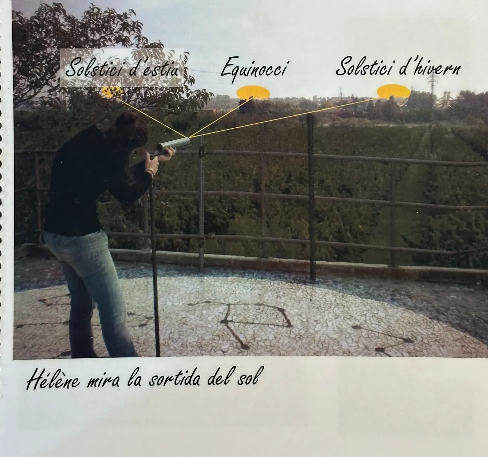
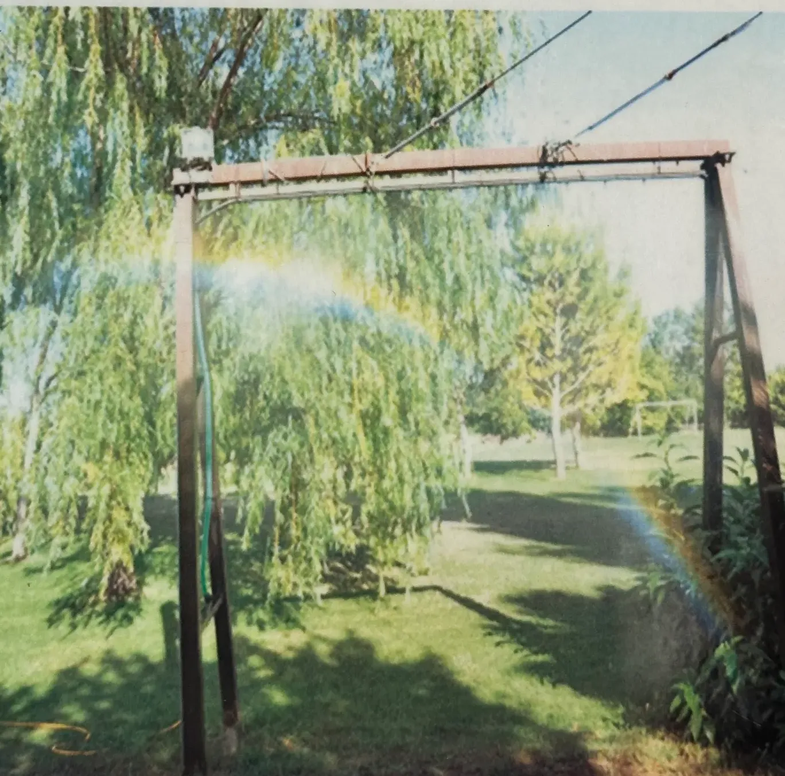

The viewpoint

The viewpoint is a terrace with a mosaic floor. Each picture set into the floor explains something about the sky above it. This book walks through them one by one.
Constellations all year round
The mosaic shows the constellations visible from here all year round, the ones that circle the north celestial pole and never set:
- Cepheus
- Cassiopeia
- Draco, the Dragon
- Ursa Minor, the Little Bear
- Ursa Major, the Great Bear
An arrow points to the Pole Star at the tip of the Little Bear: it shows you where north is.
Sighting point

From the sighting point, tubes fixed to the railing aim at three places on the horizon: where the sun rises on the summer solstice, on the equinox and on the winter solstice. Look through on the right day and the sun sits at the end of the tube.
- Summer solstice
- the sun rises furthest north-east
- Equinox
- the sun rises due east
- Winter solstice
- the sun rises furthest south-east
The three directions are labelled in the book's photographs; the explanation above summarises what they show.
The rainbow
A rainbow is sunlight reflected by drops of water. The sun has to be behind you and the rain in front.
There is a coloured circle in the mosaic you can stand in: you can tell the time.
The book also shows rings of colour seen from a plane or a mountain top, when your shadow falls on the clouds: there the arc closes into a full circle.
The water curtain

The water curtain is in the zip-line area, at the bottom of the slope.
It completes the viewpoint and proves that a rainbow is not an arc but a circle. You can check it for yourself.
Always choose a sunny day.
- Stand in front of the water curtain in the morning and you will have a rainbow in front of you.
- Come down the zip line in the afternoon and there will be a rainbow ahead of you.
- But stand under the curtain at midday, with the sun right above you, and the rainbow becomes a circle drawn at your feet that moves and dances with you, and only with you.
It is fascinating to see that every person has their own.
The Milky Way
A spiral mosaic shows our galaxy. The book places us step by step, from near to far:
- The Earth
- Our solar system
- The Orion Arm, where the solar system sits
- The Milky Way, our galaxy
- Thousands of galaxies
- The Universe
The compass rose
An eight-pointed star in the floor names the eight traditional winds:
- Tramuntana
- north
- Gregal
- north-east
- Llevant
- east
- Xaloc
- south-east
- Migjorn
- south
- Garbí
- south-west
- Ponent
- west
- Mestral
- north-west
How the wind moves
A spiral of stones reminds us that wind turns. The book illustrates it with four examples:
- Cyclone and anticyclone
- Waterspout
- Hurricane
- Bird migrations, rising in spirals on warm air
Phases of the moon
A row of mosaic moons runs from the Earth to the Sun, showing how the lit part of the moon changes.
Waxing quarter, horns to the east.
Catalan saying
Waning quarter, horns ahead.
- First quarter
- The moon is growing when we see it in the afternoon.
- Last quarter
- The moon is shrinking when we see it in the morning.
- Full moon
- It rises in the east. When it is full, it rises before the sun has set.